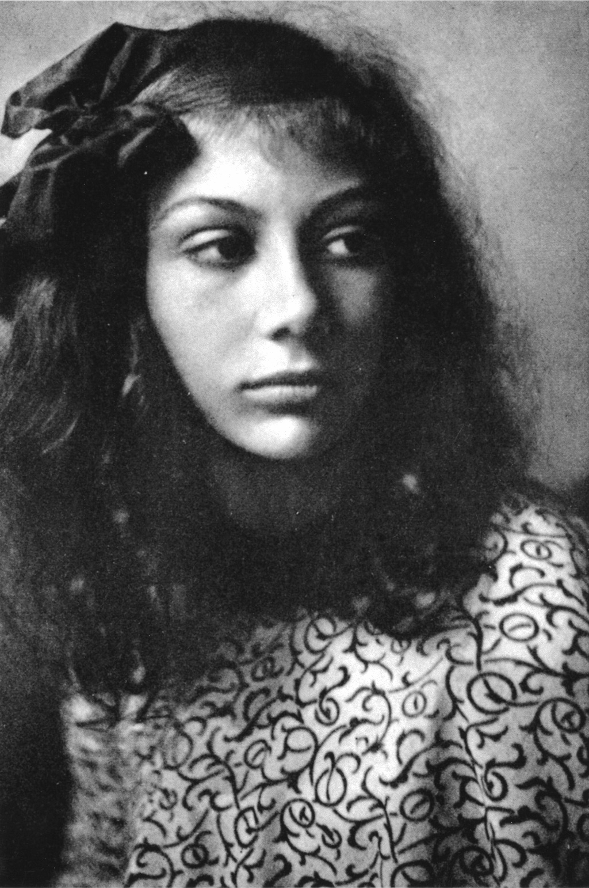

Wera Ouckama Knoop
Jesienią roku 1921 Rilke otrzymuje list, który budzi w nim przejmujące wzruszenie. Jego autorką jest Gertruda Ouckama Knoop, jej córka Wera — przed wojną towarzyszka zabaw Ruth Rilke w Monachium, dziewczyna niezwykłej urody, zapowiadająca się na pełną gracji balerinę — zmarła rok po zakończeniu wojny, mając zaledwie dziewiętnaście lat.
Rilke, ceniąc sobie znajomość z jej ojcem Gerhardem Knoopem, którego spotkał w Paryżu w roku 1909, zawsze odwiedzał jego rodzinę za swej bytności w Monachium. Po niespodziewanej śmierci Gerharda w roku 1913 poeta przesłał wdowie list pełen wyrazów współczucia, w jej imieniu prowadził rozmowy z Insel Verlag w sprawie wydania niepublikowanych dotąd utworów męża. Werę oraz jej starszą siostrę Angelinę (Lilinkę) gościł też pewnego razu na herbacie.
Było zatem rzeczą zrozumiałą, iż jej matka pragnęła napisać do niego z okazji zaręczyn Ruth. Musiała jednak poczuć zaskoczenie, otrzymawszy odpowiedź spisaną aż na szesnastu stronach, bo mimo podziwu, jaki żywiła dla poety, bliższa więź łączyła ją z Klarą i Ruth, nieczęsto też miała okazję wymieniać z nim listy.
Pod koniec listopada Rilke odkrył przed nią swoje serce — w owym czasie przed nikim nie uczynił tego z taką szczerością, nawet przed Lou Andreas-Salomé czy Marie von Thurn und Taxis. Zwierzył się ze swych uczuć rezygnacji, wręcz obojętności, z jaką przyjął wiadomość o małżeństwie Ruth, oraz rozpaczliwego pragnienia całkowitej samotności. Opowiedział o zgubnym wpływie, jaki obcowanie z ludźmi wywierało na jego siły twórcze, a także o głębokiej ranie na jego psychice, pozostawionej przez kataklizm lat wojny. Wyznał również, iż owładnęło nim zwątpienie, czy jego dzieło będzie wystarczającym usprawiedliwieniem pomocy, jaką otrzymał od swych hojnych przyjaciół.
W Valais rozpoczął nowy okres życia. Poszukiwał nie tyle środków artystycznego wyrazu, ile wewnętrznej istoty własnej natury. Prawdziwym objawieniem było w tym czasie odkrycie poezji Valéry’ego. Dopiero na samym końcu listu, niemal w postscriptum, Rilke przedstawił rzeczywisty powód, dla którego uczynił pani Knoop tak długie wyznanie. Wera i jej śmierć w młodym wieku wciąż nurtowały jego myśli. Miał nadzieję, że pewnego dnia jej matka nieco więcej mu o niej opowie.
W dzień Nowego Roku nadszedł list od Gertrudy. Opisała w nim przebieg choroby oraz śmierć córki, której poeta prawie nie znał. Dowiedział się, jak to będąc jeszcze dzieckiem, swą „sztuką poruszania się i przemiany, przyrodzoną jej ciału i duszy” zdumiewała wszystkich, którzy przyglądali się jej w tańcu. Później, już w wieku młodzieńczym, całkiem niespodziewanie wyznała matce, iż nie może — lub nie chce — dłużej tańczyć. Wraz z początkiem niewyjaśnionej choroby, która miała wkrótce doprowadzić do jej śmierci, Wera zwróciła się ku muzyce, by potem porzucić ją ostatecznie dla rysunku, „jak gdyby zawiedziony taniec wciąż się w niej ujawniał, lecz coraz to ciszej i dyskretniej”.
Rilke odniósł wrażenie, iż ta wzruszająca historia nakłada nań jakoweś zobowiązanie, „przytłaczające zobowiązanie wobec mej najtajniejszej natury”. Jakkolwiek nie potrafił jeszcze dostrzec jego spełnienia, niemniej idea tańca jako przemiany, którą odnalazł również w utworze Valéry’ego L’âme et la danse, zapłodniła jego poetycką wyobraźnię.
Tancerka wpierw, która nagle swoje ciało trwożne
zatrzymała, jakby wlano spiż w jej istnienie dziewczęce,
smutna i zasłuchana — kiedy z woli przemożnej
wtargnęła muzyka w jej przemienione serce
— napisze poeta w zadedykowanych Werze jako epitafium Sonetach do Orfeusza.
Fragmenty biografii Dźwięczące szkło D. Pratera w przekładzie autora; fragment Sonetu XXV w przekładzie M. Jastruna.